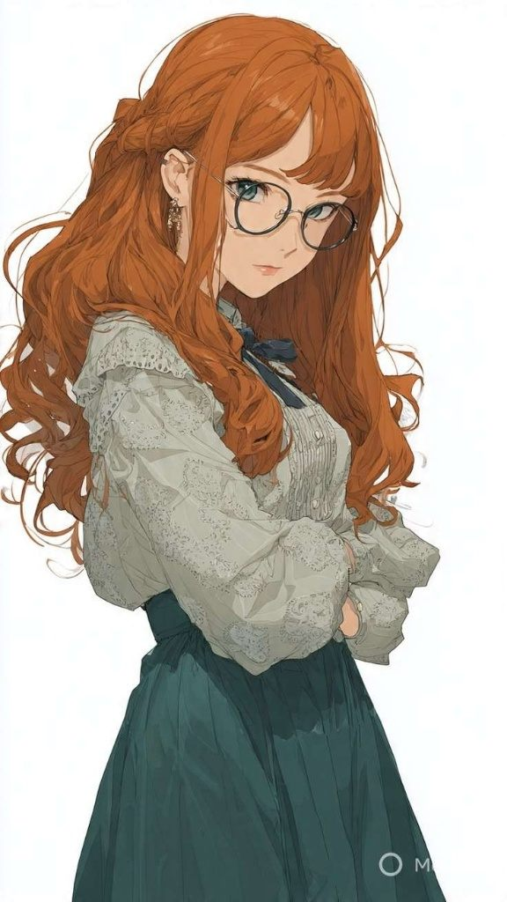
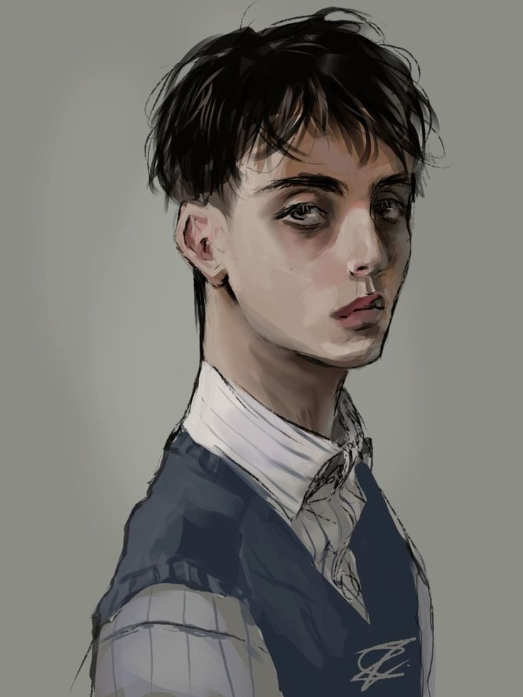
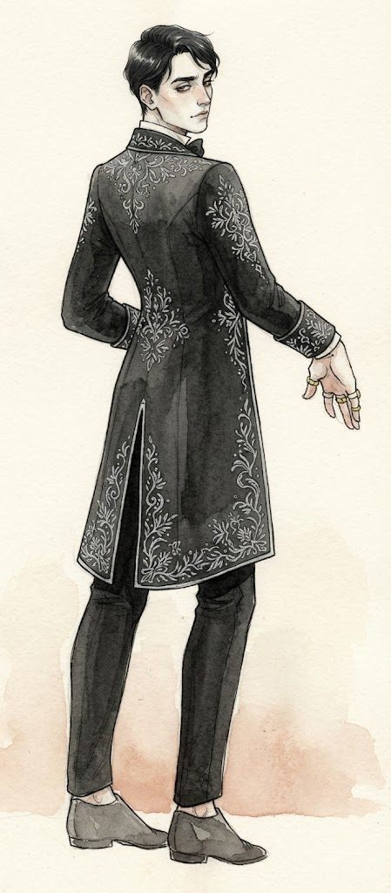

Tanıdıklar · Crystal'ın notlarından
Tanıdıklar
Crystal'ın yolunun kesiştiği herkes. 💀 ölü, ❔ durumu bilinmiyor, 💘 in love.
Taelinler 10 kişi
| İsim | Açıklama | Durum |
|---|---|---|
 Crystal Taelin (24) (1.75 m) Crystal Taelin (24) (1.75 m) |
Me - güç enerjisti | |
 Sylvia Taelin (22) (1.50 m) |
Öznur - sis - enerjisini keşfedemedi - nerd - diplomatik - senatoya girmeye çalışıyor - dedemle takılıyor - Mernos’un healing ikonası + lanetli saat | |
 Ephraim “Epoch” Taelin (18) (1.69 m) |
Deha - bro - yurtdışında okudu, bize karşı mesafeli - yıldız enerjisti (kahin) | |
Riddley Tealin (12) |
En küçük bro - şapşal - enerjist değil | Ölü |
Elvar Taelin |
Babam - annemin ölümü ve politik başarısızlıktan ötürü içe kapanık ve mutsuz - kendini sadece işine odaklamış - enerjist değil - ağır yaralı | |
Juspen Taelin |
Dedem (baba tarafı) - Kraliyet senatosunda üst rütbe - enerjist değil | |
Marcia Taelin |
Annem - yıllar önce öldü - Polentus'un Afinthilus bölgesinde yaşayan Hars milletinden (çingene çakması) - (Öldü = Ateş Kanseri) - enerjist değil | Ölü |
Naenariel Taelin |
Babaanne | |
Oscar Taelin |
Amcam - babamdan 10 yaş küçük | |
Maeny Taelin |
Halam - yıllardır kayıp | Durumu bilinmiyor |
Yakın Çevre 4 kişi
| İsim | Açıklama | Durum |
|---|---|---|
İrela |
Bizim malikanenin baş hizmetçisi | |
 Warrior Warrior |
MÜKEMMEL ÖTESİ ATIM | At |
Angel |
Sylvia’nın beyaz küçük atı | At |
Holocene |
Epoch’un gri noktalı yük atı | At |
Vask 2 kişi
| İsim | Açıklama | Durum |
|---|---|---|
Üst Bıyık |
Millete iş dağıtmaya çalışan yaşlı bir işgüzar - slum’da vergisiz iş yapıyor | |
İkko İkki Kukku |
Vask’ta para karşılığı rehberlik yapan adam |
Siyasi Çevre 5 kişi
| İsim | Açıklama | Durum |
|---|---|---|
Mendor |
Alves’ın sağ kolu | |
 Kaelor Montgomery |
Charionet’in oğlu - başkentli - kötü biri değildi - öldü gg | Ölü |
Charionet Montgomery |
Babamla konuşmaya gelen Lord - başkentli - şu an kayıp | Durumu bilinmiyor |
Marianna Montgomery |
Charionet’in karısı - başkentli - şu an kayıp | Durumu bilinmiyor |
Alderfen Ailesi |
Vask’taki soylu bir aile - babamla bunların kızı bir zamanlar nişanlıymış |
Fiskar Çetesi 4 kişi
| İsim | Açıklama | Durum |
|---|---|---|
Kinigar |
Çetesinin Lideri - çingen - lonca işi sırasında oğlu öldürmüş - Vask halkı liderlerden biri olarak onu görüyor, illegal ticaretin çoğunluğunu döndürüyor - çok adamı var ve suikast gerçekleştiriyorlar - nüfuslu - yıldız enerjisti - mutant askerleri var - KAYIPLARA KARIŞTI | Durumu bilinmiyor |
Kasilyus |
Kinigar’ın elçisi - karanlık enerjisti - portal açabiliyor | |
Vema |
Kinigar’ın manevi kızı - aşşırı güçlü karanlık enerjisti - Kara Tavşan - Kaelor’ları öldüren piç - güçlü asası var | |
Jacop |
Kaelor’a saldıran görünmez haydut - hala aranıyor | Durumu bilinmiyor |
Güvenlik Loncası (Vask) 14 kişi
| İsim | Açıklama | Durum |
|---|---|---|
Armest |
Babamın kallafi adamlarından - Hars’lı (ÇİNGEN) - Işık enerjisti - benim hoşlandığım - 28 yaşında - bir bacağı ve gözü gitti | Aşık |
Mernos |
Babamın kallafi adamlarından - Kan enerjisti - Sylvia’a ona yanık - Aroshin kıtasından gelme - 32 yaşında - öldü | Ölü |
Naviel |
Babamın kallafi adamlarından - çok güçlü ama gizemli - ışık enerjisti - hırslı - 22 yaşında - öldü | Ölü |
Asharen |
Babamın çok yakın arkadaşı - gemilerde takılıyor - moruk - intel’ci | |
Cevval Marcus |
Babamızın her kirli işini yapan eleman - ranger - dark man - öldü | Ölü |
Tilu |
Babamın kallafi adamlarından - yalnız kurt - yıldırım enerjisti (Shahmeran’lı) - 26 yaşında - kolay kolay konuşmaz - budist - uçarak kıtalar arası gezebiliyor - Şu anda Shahmeran’da, bize bilgi getirecek | |
Quill |
Lonca’nın gök bilimcisi - 50 yaşında - tıknaz ve eğlenceli | |
Baldemar |
Loncada - yol işinden anlayan biri - 45’li yaşlarda | |
Corvin |
Loncada - şifacı | |
Apollo |
Riddley’in yakın korumasıydı, Fiskar çetesi tarafından öldürüldü | Ölü |
Kru |
Lonca yeni yetmesi - kalkan enerjisti - öldü | Ölü |
Carl |
lonca yeni yetmesi - ikona sahibi: kılıcı patlayıcı - enerjist değil - öldü | Ölü |
Lucas |
Locadan biri - hadım | |
Mark |
Locadan biri |
Dravenholt 11 kişi
| İsim | Açıklama | Durum |
|---|---|---|
Eryndor |
Yıldırım enerjisti + smeksi - iblis bilgisini bizi verdi ve Polentus’taki iblisi yok etmemizi istedi - Adalet Gözü warlock’u | |
Kate Whistledown |
Dravenholt ile Vask arasında yasa dışı ticaret gemisi işletiyor - işleri ifşa olduğu için lonca tarafından ölüm döşeğine getirilmiş - (Dragon Age 2 - Isabela) - Gemisinin adı Asuman | |
Cafer Karaışık |
Hem karanlık hem de ışık enerjisti - limanlara yakın yaşıyor - ölmüş - ordu almak istemiş, kabul etmeyince idam edilmiş | Ölü |
Aerie |
Yolda karşılaştığımız kadın - bet yapmaya gelmiş Dravenholt turnuvasına - 24 yaşında - Epoch’a yandı | |
Haris |
Aerie’nin efendisi | |
Jemis |
Aerie’nin yaşlı faytoncusu | |
Elfin |
Ciğercideki 6 yaşındaki kız | |
Elva |
Ciğercideki 16 yaşındaki kız | |
Jun |
8 yaşında yetim sokak çocuğu - yüzünde kara lekeler var (boyaymış) - 2 gold | |
Charlie |
Limandaki yetimlerden - 13 yaşında - 3 gold + Sylvia ve benle bir date sözü - artık bizi sevmiyor | |
Hazineci Alfric |
Limanda satış yapan kişi |
Hükümdarlar, Tanrılar ve Tarihi Figürler 8 kişi
| İsim | Açıklama | Durum |
|---|---|---|
Alves Marverun |
Kral'ın eski danışmanı ve en büyük muhalifi - taşaklı senetör - Vask’lı - Lonca fikrini dedemize bu vermiş - ülkenin yarısından fazlasına sahip (servet) - Vask’taki kötü kesimi kurtarmak istiyor - çok güçlü - konuşan kargaları var | |
Hector Yundeltolf |
Dünyayı yarıya bölerek şeytanları karanlığa, insanları ise aydınlığa sürdüğü iddia edilen Tanrı Kral, aynı zamanda İmparatorluk'un kurucusudur - ancak bu efsaneye karşı çıkanlar, ortada gerçek şeytanların bulunmadığını, onların da aslında insan olduğunu savunanlar var - fiziksel dünyada bulunmuyor - inanları: hectorist, düşmanları: shahist - Epoch’u az kalsın şişliyodu - Kızıl Göz | |
Samuel Belight |
Yıldırım Lordu - Shahmeran’lı - Eryndor’un efendisi - Bu adam Aroshin’in kutsal adamı, peygamberi - Belight soyu kutsal kabul edilir | |
Azakhel |
İblis Lideri - aranıyor | Durumu bilinmiyor |
Kral Ollyvan Polentus |
Polentus Kralı - Vask’taki kötü kesimi yok etmek istiyor | |
“Gaddar” Olivar Polentus |
Polentus’un eski Kralı - Ayışığı Han’ı hikayesindeki Kral - Ollyvan’ın babası. | Ölü |
İmparator Descartes Yundeltolf |
İmparatorluğun Kralı - Hector’un soyundan geliyor - Aroshin’e iblislerle savaşmak için enerjistleri toplayıp geç de olsa yollamış | |
Bracken Dravenholt |
Artris İmparatorluğu’ndaki Dravenholt’un yöneticisi - asgari gücüyle tanınır |
Yeşil Kuyruk Birliği (Dravenholt Ormanı) 4 kişi
| İsim | Açıklama | Durum |
|---|---|---|
Hamuk |
Yeşil Kuyruk Birliği Lideri - iyi biri gibi - I AM OBSESSED - hem haydut (badboi) hem yakışıklı (Ifan ben-Mezd) - adına yetim doyurma sözümüz var - Maya’ya aşık :( | Aşık |
Derek |
Yeşil Kuyruk Birliği adamı - iyi biri gibi - adına yetim doyurma sözümüz var | Aşık |
Jani |
Yeşil Kuyruk Birliği adamı - 20 iq - Liman’da çalışıyor - iyi biri gibi | |
Luke |
Belkoran fabrikalarında çalışan bir Yeşil Kuyruk |
Bilinmeyenler 1 kişi
| İsim | Açıklama | Durum |
|---|---|---|
Jesse |
Epoch’un görüsündeki köylü çocuk - ay, kalyon ve kızıl dehşetli hikayeyi dinler - dedesi (?) vardır | Durumu bilinmiyor |
Bu aramayla eşleşen kimse yok. Aramayı temizle ya da “Hepsi”ni seç.